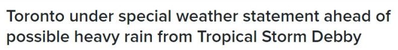
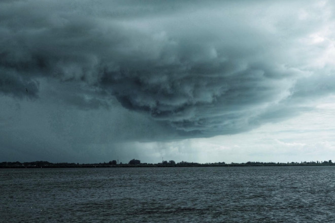
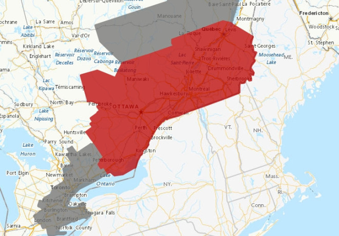
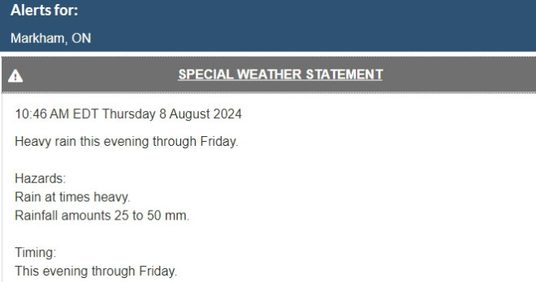
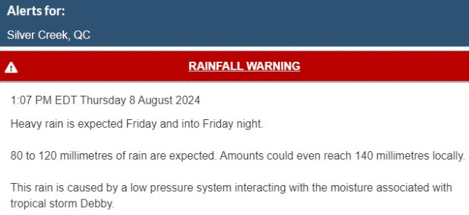

加拿大环境部对多伦多及大多伦多和汉密尔顿地区发布了特别天气声明，热带风暴Debby将在周五带来强降雨。
环境部表示，降雨将在周四晚上开始，持续到周五，一些地区的降雨量可能达到50毫米。


图源：拍摄
“预计一个低压系统将在今晚至周五在安省西南部和金马蹄地区带来强降雨，可能导致闪洪和道路积水。低洼地区可能出现局部洪水。”
加拿大环境部还表示，周四晚上和周五可能会有雷暴天气。
上个月，多伦多市的部分地区经历了超过100毫米的倾盆大雨，导致房屋、街道和主要高速公路（包括DVP和加德纳高速公路）被淹。最严重的时候，多伦多水电公司有167,000名用户断电。
CityNews天气专家Stella Acquisto表示，多伦多周四下午可能会出现阵雨，具体时间尚不确定。
“晚上降雨量会增加，延续整个夜间并到明天早晨，并伴有雷暴，”Acquisto解释说。“到明天下午2点左右，我们应该会开始放晴。”


图源：weather.gc.ca
热带风暴Debby已在南卡罗来纳州和佛罗里达州海岸部分地区造成破坏，随着它向北移动并与一个低压系统混合，安省东部和魁省西部将在周四晚上开始迎来强降雨。
截至周四中午，与热带风暴Debby残余相关的三条不同警告有：
- 加蒂诺北部、东部和稍西的地区（不包括Shawville）预计周五和周六早些时候将有50至80毫米的降雨，可能达到100毫米。
- 该警告以西的地区预计将有近50毫米的降雨。
- 加蒂诺和安省东部大部分地区预计周四晚上和周五将有50至75毫米的降雨。Belleville和Bancroft等地在周四上午10:30左右被加入警告范围。

图源：weather.gc.ca
降雨量最大的是魁省Silver Creek，警报称部分地区可能达到140毫米。
Debby最先在周一早些时候以一级飓风的形式在佛罗里达州登陆。
之后，风暴已降级，但截至周四，它仍以每小时80公里的最大持续风速向东北方向穿越南卡罗来纳州。
至少有六人在佛罗里达州和乔治亚州丧生。